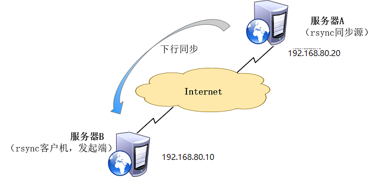
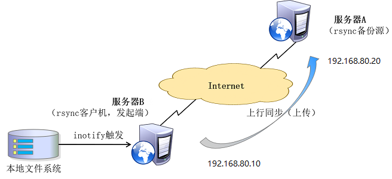
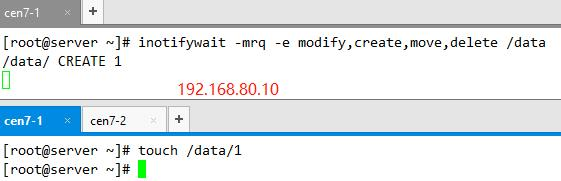

实现实时同步
要利用监控服务（inotify），监控同步数据服务器目录中信息的变化
发现目录中数据产生变化，就利用rsync服务推送到备份服务器上
实现实时同步的方法
inotify+rsync 方式实现数据同步
sersync ：金山公司周洋在 inotify 软件基础上进行开发的，功能更加强大
inotify+rsync使用方式
inotify 对同步数据目录信息的监控
rsync 完成对数据信息的实时同步
利用脚本进行结合
Rsync简介
rsync是linux系统下的数据镜像备份工具。使用快速增量备份工具Remote Sync可以远程同步，支持本地复制，或者与其他SSH、rsync主机同步。

部署Rsync
1、在服务器A和服务器B上同时安装rsync服务
rpm -q rsync 可以查看系统自带了rsync服务
yum install -y rsync
2.在服务器A 配置
vim /etc/rsyncd.conf
uid = root
gid = root
address = 192.168.80.20 #监听地址
use chroot = yes #禁锢在源目录
max connections = 0 #最大连接数不限制
port 873 #监听的端口
ignore errors
log file = /var/log/rsyncd.log
pid file = /var/run/rsyncd.pid
reverse lookup = no
hosts allow = 192.168.80.0/24
[data] #共享模块名称
path = /backup/ #源目录的实际路径
comment = www.abc.cn #项目描述
read only = no #只读
dont compress = *.gz *.tgz *.zip *.z *.Z *.rpm *.deb *.bz2 #同步时不再压缩的文件类型
auth users = rsync #授权账户,默认情况下无需密码就可以连接模块(也就是匿名方式)
secrets file = /etc/rsyncd_users #存放账户信息的数据文件
3、在服务器A上创建用户认证信息文件，格式：[账号]:[密码]，这里注意一点就是权限必须设置成600
mkdir /data
echo "rsync:123456" > /etc/rsyncd_users
chmod 600 /etc/rsyncd_users
4.服务器A端启动rsync服务
rsync -daemon
echo "/usr/bin/rsync -daemon" >> /etc/rc.local 实现开机启动
5.客户端B配置
(1).为了在同步过程中不需要输入密码，需要创建一个密码文件
echo "123456" >>/etc/rsync.pass
chmod 600 /etc/rsync.pass
(2).测试
推送到服务器A
rsync -avz --password-file=/etc/rsync.pass /data rsync@192.16.80.20::backup
访问rsync同步源，并下载到本地 /opt 目录下进行备份
格式一：
rsync -avz rsync@192.168.80.20::data /opt/
格式二：
rsync -avz rsync://rsync@192.168.80.20/data /opt/
这两种方法都需要进行交互 输入密码后即可进行备份。
免交互进行备份
rsync -az --delete --password-file=/etc/rsync.pass rsync@192.168.80.20::data /opt
1 | -v, -verbose 详细模式输出 |
配置 rsync + inotify 实时同步

1、一旦同步源出现变化，立即启动备份
2、只要同步源无变化，则不执行备份
避免了按固定周期备份时存在的延迟性、周期过密等问题
Inotify简介
Inotify 是一个Linux特性，从版本2.6.13开始提供，它监控文件系统操作，比如读取、写入和创建。Inotify反应灵敏，用法非常简单，并且比cron任务的繁忙轮询高效得多。学习如何将 inotify 集成到您的应用程序中，并发现一组可用来进一步自动化系统治理的命令行工具。
ll /proc/sys/fs/inotify #列出下面的文件，说明服务器内核支持inotify
-rw-r-r- 1 root root 0 Dec 7 10:10 max_queued_events
-rw-r-r- 1 root root 0 Dec 7 10:10 max_user_instances
-rw-r-r- 1 root root 0 Dec 6 05:54 max_user_watches
配置Inotify
1、在服务器A上调整inotify内核参数
vim /etc/sysctl.conf
fs.inotify.max_queued_events = 16384 ##监控事件队列
fs.inotify.max_user_instances = 1024 ##最多监控实例数
fs.inotify.max_user_watches = 1048576 ##每个实例最多监控文件数
2、使调整inotify内核参数立刻生效
sysctl -p
3、安装Inotify-Tool工具
inotify参考文档https://github.com/rvoicilas/inotify-tools/wiki
yum install -y inotify-tools 注：epel源
4.打开两个终端，一个终端执行创建删除等操作，另一个执行Inotify-Tool工具，测试Inotify-Tool工具时候正常
inotifywait -mrq -e modify,create,move,delete /var/www/html
inotifywait：用于持续监控，实时输出结果
inotifywatch：用于短期监控，任务完成后再出结果

5.接下来编写触发时同步脚本
inotify.sh
1 |
|
chmod +x inotify.sh